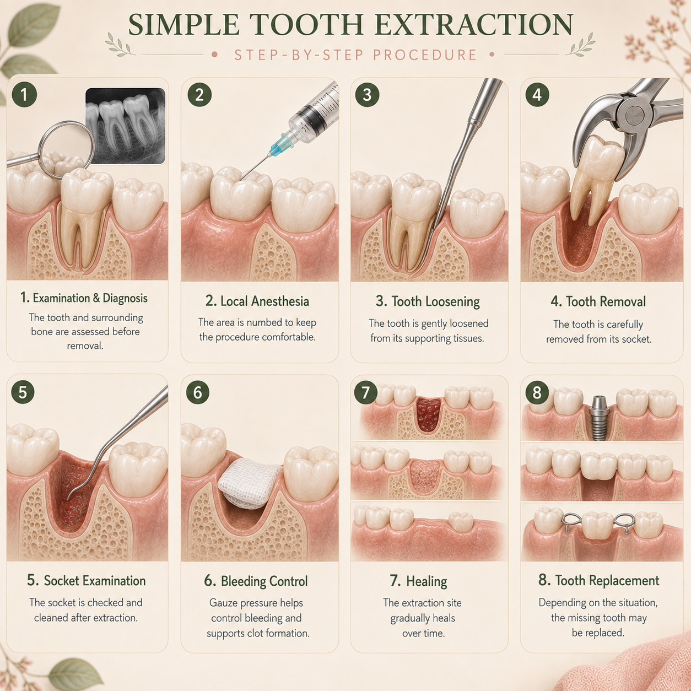

Tooth extraction means removing a tooth from its socket. Although dentists generally try to preserve natural teeth whenever possible, there are situations where removing a tooth may be the safest or most appropriate option.

A tooth extraction is a dental procedure in which a tooth is removed from its socket in the jawbone.
Dentists generally aim to preserve natural teeth whenever they can be predictably restored and maintained. However, extraction may sometimes be recommended when keeping the tooth is no longer a predictable option.
There can be several reasons why removing a tooth may be considered.
If a tooth can be predictably restored and maintained, preserving the natural tooth is often preferred. Your dentist will assess the tooth and surrounding tissues before recommending removal.
Your dentist examines the tooth and may use dental X-rays or other imaging when needed to understand the tooth and surrounding structures.
Local anaesthesia is commonly used to numb the area before the procedure. This helps make the extraction more comfortable.
The dentist carefully loosens and removes the tooth. The exact technique depends on the tooth, its roots and its position.
You will receive instructions to help protect the extraction site and support normal healing.
The area is normally numbed with local anaesthesia before the extraction, so you should not feel sharp pain during the procedure.
You may still feel pressure, movement or pushing while the tooth is being removed.
Once the anaesthetic wears off, some soreness, swelling or tenderness may occur. Your dentist will provide appropriate aftercare instructions.
A blood clot normally forms inside the extraction socket and is an important part of the healing process.
Your dentist may advise you to:
Healing time varies depending on the tooth, the type of extraction and the individual patient.
Not every missing tooth requires the same treatment. Whether replacement is advisable depends on factors such as the location of the tooth, chewing function, surrounding teeth, bone support and your overall oral health.
When replacement is appropriate, options may include dental bridges, dentures or dental implants.
Not always. The possibility of saving a tooth depends on factors such as the amount of remaining tooth structure, the condition of the supporting tissues and whether predictable treatment is possible.
Wisdom teeth can be extracted like other teeth, but their position and anatomy can make the procedure different. Not every wisdom tooth needs to be removed.
The consequences of a missing tooth vary depending on its location and the individual situation. Your dentist can discuss whether replacement is advisable and which options may be suitable.
If you experience symptoms that concern you, such as significant or worsening pain, persistent bleeding, increasing swelling or other unexpected changes, contact your dentist for assessment.
If a tooth does need to be removed, your dentist can discuss whether replacement is appropriate and explain options such as bridges, dentures or dental implants depending on your individual needs.
If you have a question about tooth extraction or another dental treatment, you can submit your question through the website.
Ask Dr. Anushka →The information on this page is for general educational purposes only and does not replace an in-person dental examination, diagnosis or personalised professional advice.